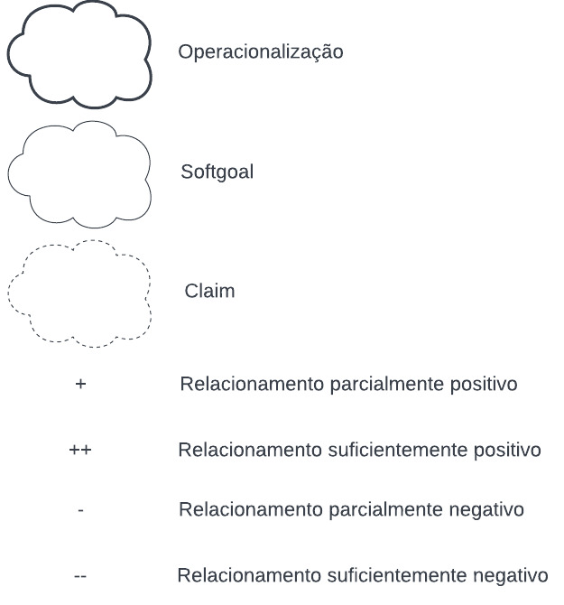
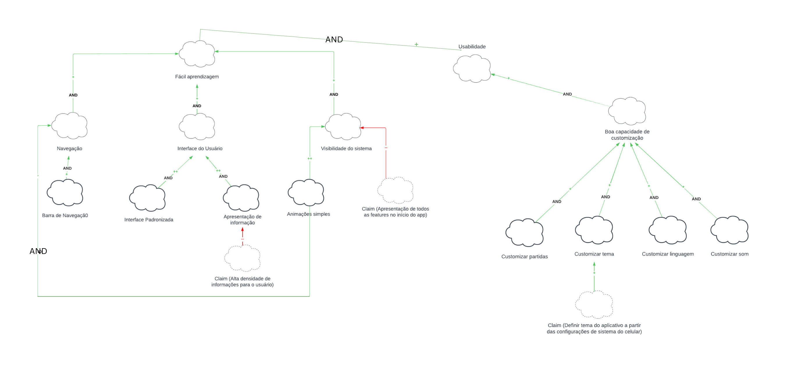
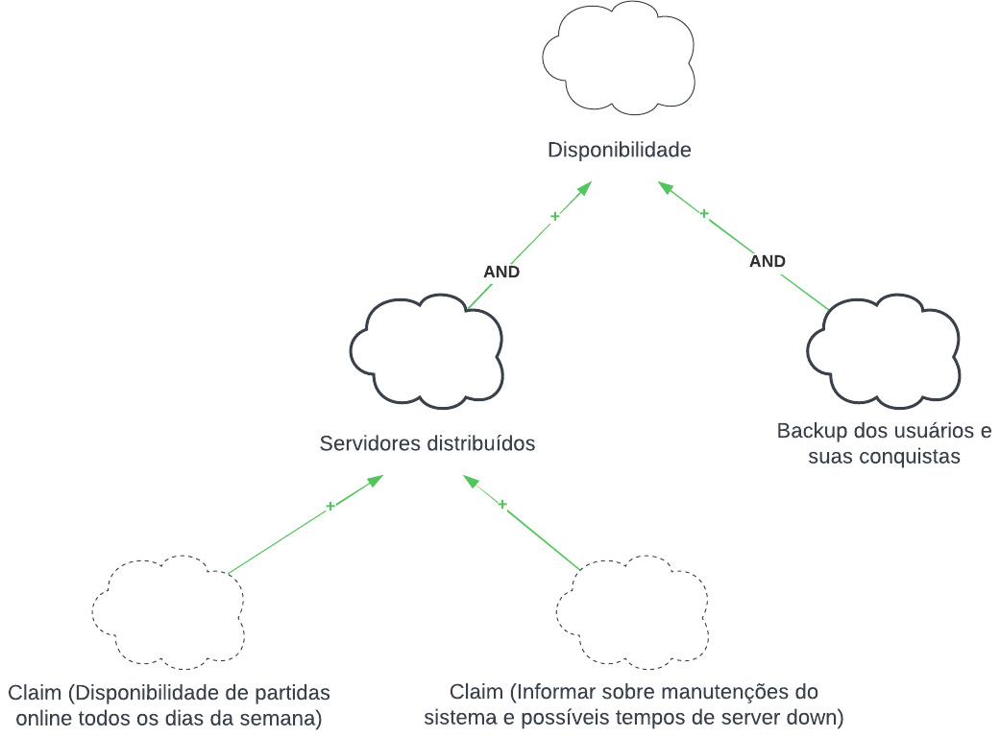
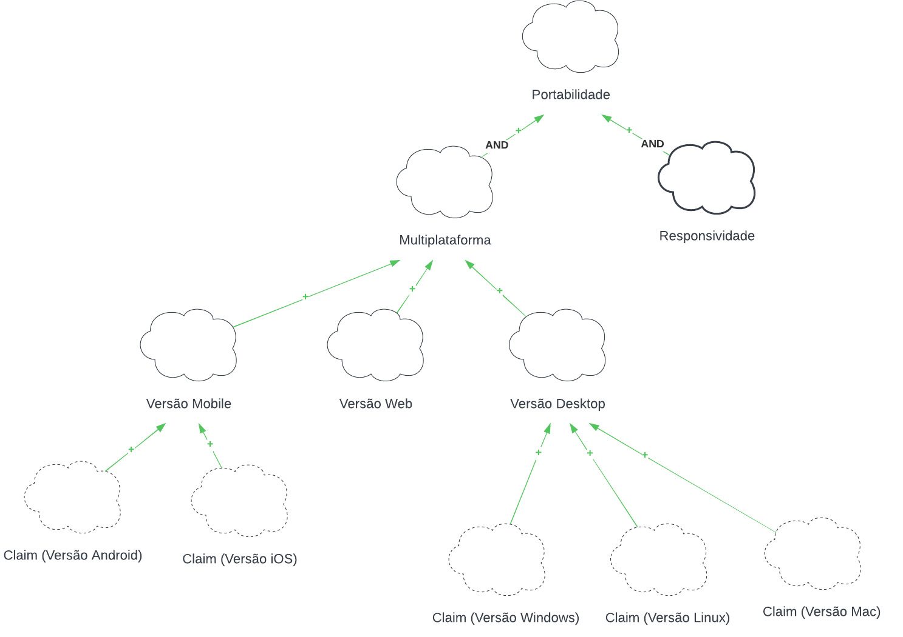
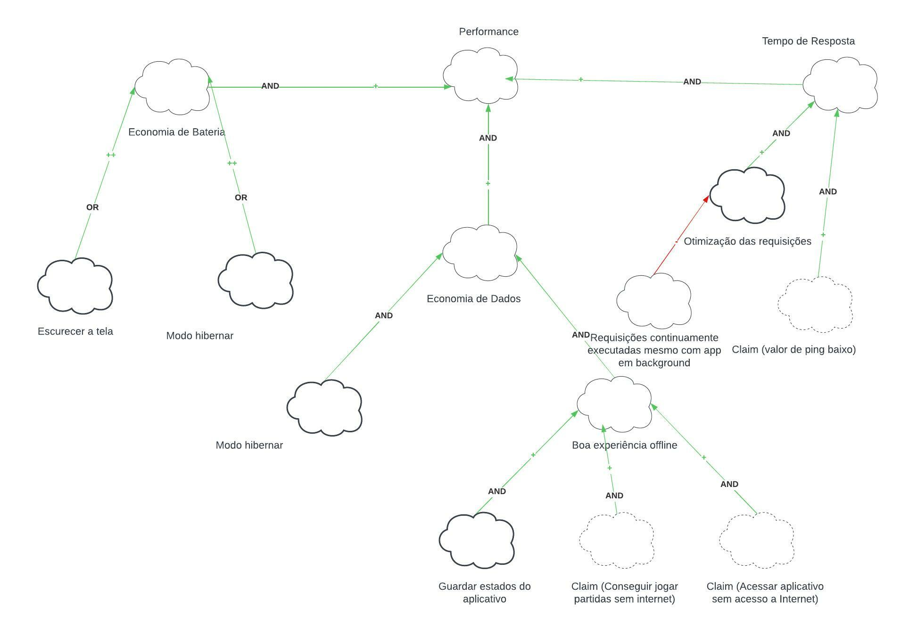

NFR Framework
O NFR Framework é uma abordagem para representar e analisar Requisitos Não-Funcionais. Seu objetivo é ajudar desenvolvedores na implementação de soluções personalizadas, levando em consideração as características do domínio e dos sistema em questão.
O Framework utiliza de softgoals, um objetivo que não possui uma clara definição nem critérios de satisfação precisos. São utilizados para representar Requisitos Não-Funcionais e podem estar inter-relacionados, expressando a influência de uma softgoal em outro.
É representado por meio de um grafo, chamado Softgoal Interdependency Graph (SIG), que registra as considerações do desenvolvedor sobre os softgoals e mostra suas interdependências.
Os softgoals podem ser separados em 3 tipos:
-
NFR Softgoal – Característica abstrata, a qual se deseja considerar na análise, visando saber se a mesma será cumprida ou não cumprida, ou seja, escolhida ou não escolhida para ser implementada. São requisitos não funcionais, vistos como critérios/atributos de qualidade.
-
Softgoal de Operacionalização – forma concreta de viabilizar ou não as características abstratas. São funcionalidades.
-
Claim Softgoal (Argumentation) – a notação que pode ser acrescentada ao modelo, argumentando algo sobre um ponto específico da modelagem. Escrita em linguagem natural.
Cada um desses Softgoals podem ser decompostos, e os tipos de decomposição são:
-
Decomposição de Softgoal NFR: refina ou subdivide um um softgoal NFR em outros específicos. Isso pode ajudar a dividir grandes problemas em problemas menores e oferece um aspecto útil para lidar com ambiguidades e prioridades.
-
Decomposição de Operacionalização: subdivide um softgoal de operacionalização em outros softgoals de operacionalização mais específicos. Operacionalizações são úteis para definir uma solução geral e refiná-la em soluções mais específicas.
-
Decomposição de Afirmação (Claims): refina um softgoal de afirmação em outros softgoals de afirmação. Ela é importante para apoiar ou negar justificativas específicas de projeto.
-
Priorização: A priorização é um tipo especial de decomposição, onde ocorre o refinamento de um softgoal em outro softgoal com o mesmo tipo e tópicos, mas com uma prioridade associada.
As decomposições são especificações dos softgoals, ou seja, alterações no estado de um softgoal filho geram alterações no softgoal pai, e essas alterações são chamadas de contribuições. Essas contribuições são:
| Contribuição | Descrição |
|---|---|
| AND | se os softgoals descendentes forem satisfeitos os softgoals ascendentes também são. |
| OR | se algum softgoal descendente form satisfeito, o ascendente é satisfeito. |
| MAKE(++) | se o softgoal descendente for satisfeito o softgoal pai também é. |
| BREAK(--) | se o softgoal descendente for suficientemente satisfeito, o softgoal pai é negado. |
| HELP(+) | se o softgoal descendente for parcialmente satisfeito, o softgoal ascendente será parcialmente satisfeito. |
| HURT(-) | se o softgoal descendente for satisfeito, o softgoal ascendente será parcialmente negado. |
| UNKNOWN(?) | fornece uma contribuição desconhecida entre um softgoal descendente e um ascendente, e pode ser tanto positiva quanto negativa. |
| EQUALS | o softgoal descendente só será satisfeito se o softgoal ascendente for satisfeito / o softgoal descendente será negado se o softgoal ascendente for negado. |
| SOME (+|-) | usado se o sinal da contribuição é conhecido, mas a extensão(parcial ou total) não é. |
Por fim, para a análise dos softgoals, são atribuídos rótulos que definem o grau de satisfação de um softgoal. Ao atribuir um rótulo em um softgoal de baixo nível, é feita a propagação da satisfação daquele requisito de acordo com as contribuições definidas.
NFRs
A seguir estão apontados 4 NFRs que fizemos o rastreio e estudo mais profundo. Eles são: usabilidade, disponibilidade, portabilidade, performance.
Legenda
A figura 1 apresenta a legenda dos diagramas NFRs que serão mencionados no restante do texto.

Figura 1: Legenda NFR. (Fonte: autor, 2022).
NFR Usabilidade
Na figura 2 temos o diagrama representando o NFR de usabilidade.

Figura 2: Diagrama NFR Usabilidade. (Fonte: autor, 2022).
NFR Disponibilidade
Na figura 3 temos o diagrama representando o NFR de disponibilidade.

Figura 3: Diagrama NFR Disponibilidade. (Fonte: autor, 2022).
NFR Portabilidade
Na figura 4 temos o diagrama representando o NFR de portabilidade.

Figura 4: Diagrama NFR Portabilidade. (Fonte: autor, 2022).
NFR Performance
Na figura 5 temos o diagrama representando o NFR de performance.

Figura 5: Diagrama NFR Performance. (Fonte: autor, 2022).
Bibliografia
[1] SILVA, Reinaldo. NFR4ES: Um Catálogo de Requisitos Não-Funcionais para Sistemas Embarcados.
[2] SERRANO, Milene - SERRANO, Maurício. Requisitos - Aula 17. Local: UnB-FGA, Gama, DF. Disponível em: Requisitos - Aula 16. Acesso em: 10 de Dezembro de 2022.
Histórico de Versão
| Versão | Data | Descrição | Autor(es) | Revisor(es) |
|---|---|---|---|---|
1.0 |
10/12/2022 | Criação da versão inicial do documento | Maurício Machado | Nicolas Souza |